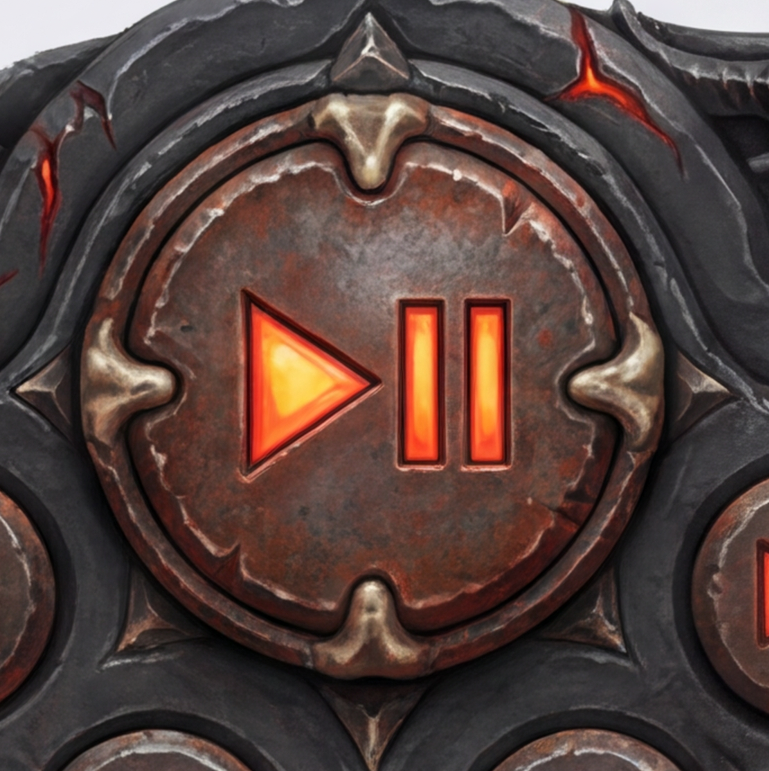

Distinction shown per card: momentary = the old press-ink-then-
spring-back baked button, holds no state. stateful = this treatment,
latches a state the eye can read without interacting. Every glow/lamp/ring/badge colour below
is sampled from that specific theme's ownresults.json palette or
director css spec (track/fill/accent/glow) — never a fixed hex
baked into this page's CSS.
Why "themed" matters — same button, two treatments
The first illuminated-button pass shipped a flat, hardcoded blue halo on every skin
regardless of theme, and pasted a stock crossed-arrows glyph over the baked icon —
on Diablo Gothic's molten bronze/lava button that reads as a sticker slapped on top,
clashing hard against the warm palette already baked into the art. Click to compare
that failure mode directly against a themed, material-integrated glow sampled from
this exact skin's own palette.ember (#d27828) — no glyph
added, no ring floating above the crop; the button's own baked highlight brightens.
GENERIC (bad) — shipped Option A failure mode

Hardcoded #2255ff ring. Ignores the skin's own warm
ember/bronze palette entirely — the exact clash the director steer flagged.
THEMED (good) — sampled from palette.ember
Screen-blend bloom seated on the button's own baked highlight,
coloured from #d27828 (this skin's real palette.ember).
No added glyph — the baked triangle/bars icon does all the reading.